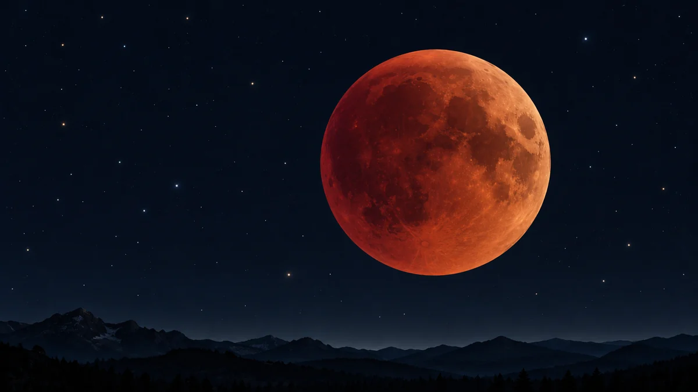

개기월식 때 달은 왜 사라지지 않고 붉어질까요?
지구 그림자에 들어간 달까지 도달하는 붉은 햇빛의 길을 따라가며, 개기월식의 색과 관측 조건을 알아봅니다.

지구가 태양과 달 사이에 서요
개기월식이 시작되면 둥근 달이 지구 그림자 속으로 들어가며 어두워집니다. 그런데 완전히 검게 사라지지 않고 구리빛이나 붉은빛을 띠기도 하지요. 태양빛을 지구가 가렸는데 달까지 도달하는 빛은 어디에서 오는 걸까요?
월식은 보름달 무렵 태양·지구·달이 거의 일직선이 될 때 생깁니다. 지구가 가운데에 놓이고 지구 그림자가 달 표면을 덮습니다. 달 궤도는 지구가 태양을 도는 면에 대해 약 5도 기울어져 있어서, 보름달마다 세 천체가 정확히 맞지는 않습니다.[1]
가장 진한 그림자에도 빛이 조금 닿아요
지구 그림자의 안쪽에서 태양이 완전히 가려지는 부분을 본그림자, 또는 엄브라라고 합니다. 달 전체가 이 영역에 들어가면 개기월식입니다. 일부만 들어가면 부분월식이고, 바깥의 옅은 반그림자만 지날 때는 밝기 변화가 눈에 잘 띄지 않을 수 있습니다.
본그림자라고 해서 달에 도달하는 모든 빛이 완전히 0이 되는 것은 아닙니다. 지구 가장자리를 스쳐 대기를 지난 햇빛 일부가 굴절, 즉 진행 방향이 휘어지는 현상을 거쳐 그림자 안쪽의 달까지 이어집니다. 그 빛이 달 표면에서 반사되어 다시 지구의 우리 눈으로 돌아오기 때문에 어두운 달의 윤곽과 색을 볼 수 있습니다.[1] [2]
대기가 푸른빛을 흩뜨려요
햇빛에는 여러 색이 섞여 있습니다. 지구 대기를 통과할 때 파장이 짧은 파랑과 보라빛은 비교적 쉽게 사방으로 흩어지고, 파장이 긴 빨강과 주황빛은 더 많이 남아 달 쪽으로 갑니다. 맑은 낮하늘이 파랗고 해 질 무렵 지평선이 붉게 보이는 것과 같은 빛의 성질입니다.
그래서 개기월식의 달은 지구 둘레 모든 일출과 일몰의 붉은빛을 한꺼번에 받은 것처럼 보입니다. 매번 같은 색은 아닙니다. 대기 속 구름과 먼지는 달에 닿는 빛의 양과 색을 바꿉니다. 큰 화산 분출 뒤에는 달이 유난히 어둡게 보이기도 합니다. ‘블러드문’은 새로운 종류의 달이 아니라 붉게 보이는 모습을 가리키는 별칭이에요.[1] [2]
날짜와 보이는 지역을 함께 확인하세요
월식은 맨눈으로도 변화 과정을 볼 수 있지만, 달이 떠 있는 시간과 지역에서만 관측할 수 있습니다. NASA의 월식 표도 날짜와 함께 가시 지역을 따로 적습니다. ORBIT 밤하늘 달력에서는 달의 위상과 천문 일정을 살펴보고, 우리 지역의 월출·월몰과 월식 시작·최대·종료 시각은 공식 관측 자료에서 별도로 대조하세요. 구름과 지평선 가림도 실제 관측을 바꿉니다.
관측할 기회가 온다면 색뿐 아니라 밝기와 달 원반 안의 색 차이도 함께 살펴보세요. 기억할 한 가지는, 붉은 달이 지구 그림자에서 스스로 빛나는 것이 아니라 지구 대기를 통과하며 푸른 성분이 흩어진 햇빛을 반사해 보이는 모습이라는 사실입니다.[1] [2]
이 이야기를 확인한 자료
- NASA Science · Eclipses and the Moon ↗자료 확인 2026.10.07 · 원문 새 탭
- NASA GSFC · Visual Appearance of Lunar Eclipses ↗자료 확인 2026.10.07 · 원문 새 탭
자료의 날짜와 적용 범위를 함께 확인해주세요. 오류 제보하기 →